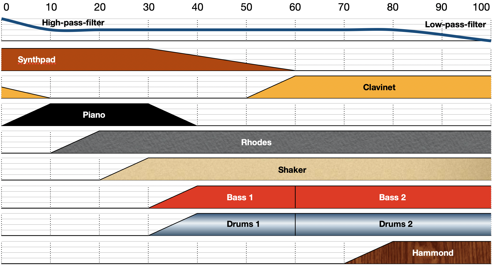

This DEMO shows how WebAudioXML can be used to create a slider to control music mixing. The graph indicates the levels for the different tracks and effects along the axis of slider values. WebAudioXML is a language that lets a developer configure an audio setup and specify the mapping between incoming variables (e.g. from a slider) to control one or many audio parameter (e.g. gain or frequency).
For detailed information, please read the comments in the code: audio.xml
WebAudioXML is a PhD research project invented and maintained by Hans Lindetorp. For more info, turorials, documentation and download links, please visit https://github.com/hanslindetorp/WebAudioXML
The chords are chosen and the instruments are played by Hans Lindetorp
